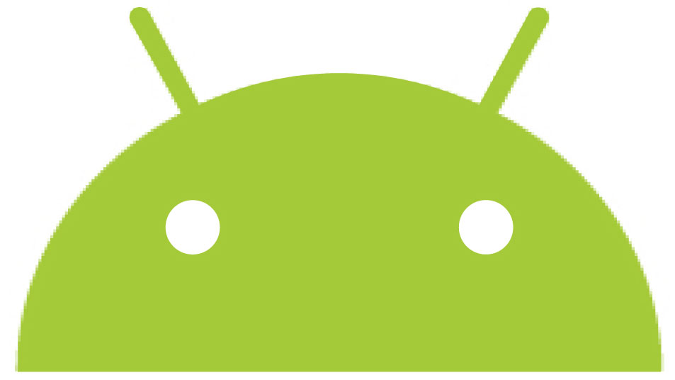

Happy Birthday Android!
10 Years of Android: 10 Times it Wowed the World.
by John Smith

It's 10 years since Google lit the fuse on something that would transform the mobile market. "We think what we are announcing… is more significant and ambitious than a single phone," Google's Andy Rubin wrote back then. The product? Android. "We hope thousands of different phones will be powered by Android," added CEO Eric Schmidt. Thousands? Try billions. Ten years on, Google says there are two billion monthly active devices on Android.
1. October 22, 2008: the first Android Phone
Almost a year after Android was initially announced the platform got its first phone – we called it the Googlephone. The HTC Dream, aka the T-Mobile G1, was the first smartphone to ship with Android on board. And it was a strong start, second only to the iPhone. It wasn’t quite an iPhone killer, but it was comfortably close. As we said in our review: "we'd say it is easily in the top five of all mobile phones ever made and showcases why Google Android was worth the long wait". It looks impossibly dated now, the result of what looks like a drunken coupling between a Nokia Communicator and an O2 XDA, but it was truly extraordinary new product in a market Apple had effectively had all to itself.
2. January 5, 2010: the original Nexus
Sometimes we impress ourselves. Reviewing the Google Nexus One, a phone built by HTC but masterminded by Google, we said that it was a decent effort but "we can't help but feel there's more to come from the search giant. "On paper it was better than any iPhone, but while it lacked Apple's silky performance it was a vast improvement on other Android firms' best efforts. It was a little too geeky for its own good, which was a blessing and a curse: a blessing because that made it enormously appealing to the kind of people who like fiddling with their phones, and a curse because it wasn't quite as intuitive as an iPhone.
3. February 24, 2011: things that make you go Xoom
The Motorola Xoom wasn't the first Android tablet, but as far as your correspondent is concerned it was the first one that was any good: previous attempts took a phone OS, made it bigger and hoped it'd be as good as an iPad. It wasn't. The Xoom was different, because it came with Android 3.0 Honeycomb, which was the first Android designed with tablets in mind. It suffered from a relative lack of tablet apps, something that would plague Android tablets for some time, but it showed the world that Android tablets didn’t need to be cheap and nasty. They could be quite expensive and rather brilliant instead.
4. October 19, 2011: we all scream for Ice Cream
Android 4.0, aka Ice Cream Sandwich, was announced in October 2011 - although as we noted a year later, some people had to wait a very long time for manufacturers to provide it.
Such fragmentation was a huge problem for Android at the time: where Apple's iOS updates hit every device at once, Android updates had to be customized by each individual firm. That was a shame, because ICS was revolutionary: it was a massive overhaul not just of Android's interface but of messaging, contacts, camera and video. It made Android much more user-friendly - sometimes a bit too friendly, with apps such as the video player being overly simple - and provided a good platform for manufacturers to experiment with
5. October 29, 2011: take Note
Oh, how we scoffed: a smartphone with a 5.3-inch screen was ridiculously huge, and we all know what Steve Jobs said about styluses and touch screens: "if you see a stylus, they blew it." But the Samsung Galaxy Note created a new kind of smartphone, the phablet, and lots of people liked it: Samsung sold a million in the first two months. It was better still after an Ice Cream Sandwich upgrade, prompting us to hold our hands up: "Let's just say we were more than just a little wrong. This device went on to ship by the truckload for Samsung - adopted by both serious geeks (the people we originally expected to take it to their hearts) and your average punter."
6. March 6, 2012: Market no more
In a move that shocked many, Google ditched the Android Market, Google Music and Google eBookstore in favour of a new, streamlined app and content store it called Google Play. It was a deliberate and necessary attempt to emulate Apple, whose downloads of apps and entertainment were all under the iTunes banner. While Apple insisted on using the not-much-loved iTunes as the front-end for its services, having everything in one place made much more sense than having multiple online stores for different kinds of content. It helped make Android that little bit more user-friendly, and Google made sure existing purchases weren't rendered redundant.
7. September 11, 2012: Android's on its way
Android's momentum continued to build. In February 2012 Google announced that after four years, 300 million Android devices had been activated, with 850,000 activations every day: just seven months later, that number stood at half a billion. Admittedly that number included some pretty shoddy devices from Far East firms churning out cheapo devices by the container load, but it also included some seriously impressive devices from a fantastically competitive marketplace. Android's market share cracked the 75% mark worldwide, largely thanks to extraordinary numbers by Samsung: it was variously credited with 35%, 35.2% or 31.3% of global smartphone shipments.
8. September 3, 2013: big numbers, but big problems too
Android's numbers were so big they beggared belief: by September 2013 the number of activated devices had rocketed to a staggering 1 billion. But with so many different devices running so many different flavors of the OS, problems were beginning to emerge - such as the Stagefright exploit. As we said at the time, "It's clear that some carriers and some manufacturers simply aren't doing enough to keep Android up to date... Android users deserve better" - so vulnerabilities that Google had spotted and patched ages ago were still wide open on far too many devices. Google's move to Google Play Services would go on to address that very problem.
9. 25 June, 2014: vroom vroom!
Google IO 2014 was enormously exciting, although not all of its innovations have stood the test of time: Android Wear seems to have lost its luster for the time being at least, Android TV has caused us to swear at our Sony TV much more than we'd like and Google Glass has gone from hero to zero.
But the bigger story was that Android was everywhere: the newly improved Chromecast turned out to be a big hit and Android Auto was accelerating. Android was clearly more than just an operating system: it was an ecosystem that would include your home, your car, your wearable tech and your TV too
10. July 2016: The new normal
Android had been outselling iOS for some time, but in July 2016 there was another significant shift: a single Android flagship, the Samsung Galaxy S7, was outselling Apple's flagship iPhone 6S. Between February and May 2016 in the US, the Galaxy S7 and S7 Edge outsold the iPhone 6S and 6S Plus. That was partly because of timing - the 6S was a tock in the tick/tock iPhone updates, a refinement of the iPhone 6 rather than a snazzy new system, and many people were hanging on for the iPhone 7 - and partly because Samsung was making really great phones. But it also showed that Android was finally getting to a similar level of interest and admiration that the Apple brand had enjoyed for may years.